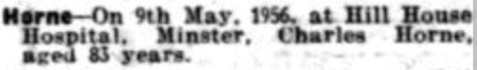
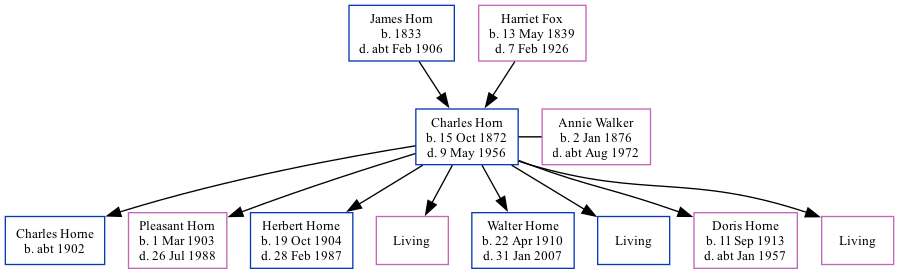

Charles Horn 1872 - 1956
[ Home ] | [ Calendar ] | [ Surnames Index ] | [ Family History ]A fisherman, postman and barge worker and the son of James Horn (a brewer's laborer) and Harriet FoxCharles Horn, the first cousin three-times-removed on the father's side of Nigel Horne, was born in Ramsgate, Kent, England on Oct 15, 18721,2,3,4,5 and married Annie Walker (with whom he had 8 children: Charles G, Pleasant Emily, Herbert Jack, Annie Rose, Walter Stephen, Frederick, Doris Olive and Frances, along with 3 surviving children) in St Lawrence, Thanet, Kent, England on Jun 3, 19006.
Charles spent all of his life in Kent, England. Throughout his life, he lived in several places around the county: at Chapel Road, St Lawrence in Thanet on Apr 3, 18811; at London Tavern, Addington Street, Margate on Apr 5, 18912; at Nelson Crescent in Ramsgate on Mar 31, 190110; at 67 Addington Street in Ramsgate on Apr 2, 19113 (the same place as his mother had been living on Mar 31, 1901); and at 4 Bloomsbury Road in Ramsgate in 19377, on Sep 29, 19394, in 19538 and in 19559.
He died on May 9, 1956 on Hill House Hospital, Tothill Street, Minster in Thanet.
Parents
- James was born in 1833
- Harriet Allen was born on May 13, 1839
Children
- Charles G was born c. 1902
- Pleasant Emily was born on Mar 1, 1903
- Herbert Jack was born on Oct 19, 1904
- Walter Stephen was born on Apr 22, 1910
- Doris Olive was born on Sep 11, 1913
Citations
- 1881 England, Wales & Scotland Census - Findmypast (was age 9 and the son of the head of the household)
- 1891 England, Wales & Scotland Census - Findmypast (was age 18 and a servant in the household)
- 1911 Census for England & Wales - Findmypast (was age 39 and the brother in law of the head of the household)
- 1939 Register - Findmypast (was the head of the household)
- England & Wales births 1837-2006 - Findmypast
- Kent, Canterbury Archdeaconry Marriages - Findmypast
- According to press clipping of his daughter Doris's wedding
- 1953 Kelly's Thanet Directory
- 1955 Kelly's Thanet Directory
- 1901 England, Wales & Scotland Census - Findmypast (was age 28 and the head of the household)
Media
1955 Kelly's Thanet Directory

East Kent Times and Mail - 18 May 1956

1953 Kelly's Thanet Directory

England & Wales births 1837-2006 - BMD/B/1872/4/AZ/000332/302
Kent, Canterbury Archdeaconry marriages - GBPRS/CANT/M/97022351/1
England & Wales marriages 1837-2005 - BMD/M/1900/2/AZ/000187/161
England Marriages 1538-1973 - R_848396558
1901 England, Wales & Scotland Census - GBC/1901/0007445396
1911 Census for England & Wales - GBC/1911/RG14/04515/0057/7
1891 England, Wales & Scotland Census Transcription - GBC-1891-0005869331
1939 Register - TNA-R39-1765-1765D-023-26
Family Tree
Generated by ged2site. Last updated on Nov 13, 2024